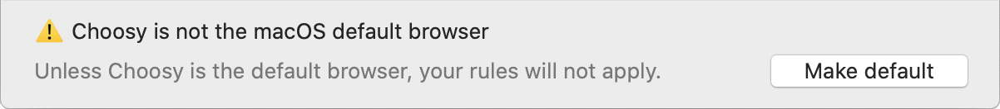
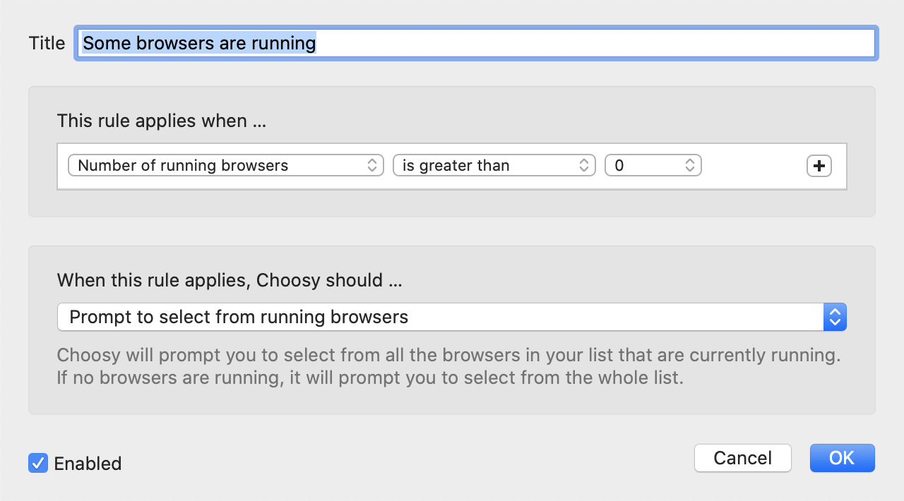

A step by step guide to setting up Choosy.
The first thing to do is to tell macOS that it should use Choosy as the default browser. This will allow Choosy to receive links you click on and decide which browser to send them to.
Whenever Choosy isn't set as your default browser, it will display a prompt at the bottom of the settings window:
You can change also your macOS default browser any time in the macOS System Preferences app.
Next, set up the list of browsers that you want Choosy to use. When you first install Choosy the browser list will be populated with all the browsers that macOS knows are installed on your system. This list won't be perfect: it might include some apps that aren't really browsers, but happen to be able to open links; it might be missing some browsers, especially if you have more than one version of the same browser installed.
The order of the browser list is important: they should be in order of preference, with the browser you'd most often like to use at the top. When we configure Choosy's rules, any settings that refer to the “favourite” browser are talking about the browser at the top of the list. Similarly settings that talk about the “best running browser” are referring to the running browser that is highest up the list.
There are more details on how to edit your browsers list in the browser settings section.
Next we should configure some rules. Rules tell Choosy what to do when you open a link. Each rule has two parts: the conditions when Choosy will apply the rule, and Choosy's behaviour when the rule is applied.
For example, here's one of the default rules that Choosy sets up for you when first installed:
The condition for this rule is that some of the browsers in your browser list must be running. When that condition is met, the behaviour is for Choosy to prompt you to select from one of the running browsers.
The order of the rules list is important: Choosy will try the rules in order, and use the first one where the conditions are met. The last rule in the list is special—it defines the default behaviour that will be used when no other rule is appropriate.
There are more details about creating and editing rules in the rules settings section.
If you want to use Choosy's functionality from inside your browser there are a variety of browser plugins and bookmarklets that you can install. There is more information in the browser integration section.